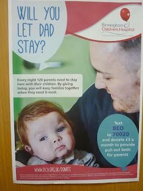
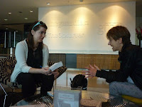
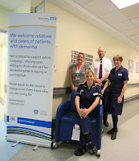

| The Great and Little Domesday Books in c19th bindings (wikipedia) |
{kind=link}
A 186 page
survey, split into two sections -- Acute and Mental Health Trusts -- the Great and Little
Domesday. A potentially fascinating source, I believe, chronicling one particular aspect of
the English NHS in a moment of sociological transition. That’s what I’ve been compiling over this last fortnight.
When Nicci
Gerrard and I set out in late November 2014 to establish the rights of carers
(family members and particular friends) to stay with people with dementia if
they were admitted to hospital – and the rights of those people to have their
carer with them – we assumed this was something quite simple. We would make our case, people in authority
would agree, a regulation or two would be rearranged and the job would be done. John's Campaign a passing phase.
We had not
grasped the extraordinary structural muddle left as the aftermath of the
Lansley ‘reforms’ of 2012. Wherever we went – to the NHS England Patient
Experience department, to the Chief Nursing officer, to the Department of
Health – people agreed with our suggestion but denied utterly that
they had any power to make it happen. Visiting arrangements were the
responsibility of each individual hospital – or hospital ward, they insisted. It was up to the ward sister. The problem with that was that Sister A might
be a genial soul, happy to see her clinical space full of friends and relatives
cheering up her patients, whereas Sister B might see visitors only as dirty
feet on her polished floors, unhygienic bottoms on her beds and irritants interrupting the sacred Ward Rounds by asking ignorant questions about
their relatives’ health. Who knew which day each Sister would be on duty and
what if your relative, already disoriented by their dementia, were moved from
one ward to another?
 |
| Photo taken in BCH hospital toilet -- 120 parents staying in this small hospital every night is probably an underestimate |
{kind=link}
It was the Chief
Nurse of a children’s hospital who raised the heretical notion that hospitals
were (or should be) publicly owned spaces where any of us had a right to be, whenever we chose, as
long as we were not causing a nuisance. But who would define nuisance? When
this wonderful woman refused to leave her mother’s bed side in a neighbouring
hospital she was threatened with Security to remove her. (She didn’t go) Perhaps a campaign of civil disobedience was what we needed? I seriously
considered whether I should carry a length of bicycle chain in my bag and hook
myself to the bed rails. But who actually wants to be having a row with
Security when the aim of the visit is to comfort and to reassure?
The same magnificent
Chief Nurse raised the question of Human
Rights. The right to family life, for instance – if you had been married to
your dear wife for 60 + years, honouring your vows to comfort one another in sickness and in health, was it
not plain wrong that you should be expected to get up and leave her side when some
young nurse jangled the ward bell for the end of Visiting? How had you become a Visitor in her life? There’s
Equality legislation too: if dementia is a disability as well as a disease,
then welcoming a willing human communication aid (a carer) should be as axiomatic as
trying to ensure that the patient keeps their spectacles, dentures and zimmer frame with them.
Perhaps what Nicci and I needed was a legal campaign? Find a friendly pro bono lawyer and mount some test case to oblige the NHS to recognize the provisions of
its own constitution? We shrank from the idea.
 |
| Nicci (right) negotiating |
{kind=link}
Individual persuasion
was all we could contemplate, though the prospect was daunting. The Observer
offered space on its website to host a list of hospitals pledged to welcome (willing) carers
whenever the patient needed them. There were no criteria. All that the
hospital – or ward, department, health board, trust – was asked to do was write a
50 word pledge to this effect. And they did.
A pledge from Royal United Hospitals, Bath:
“Carers and families of people living with dementia are welcome on our wards at all times. Our commitment is to listen, and to do what we can to support you in providing ongoing care to your relative or friend. After all, you know the person best.”
But there were so many
of them. Something between 140 – 150 Acute Hospital Trusts, covering varying
number of hospitals and service locations in each. And perhaps 60 – 70 mental
health and community trusts. Plus the three other UK countries. The Observer opened its list in
July 2015 and it’s taken until now for all of the English Acute Trusts to make the
necessary commitment. English Mental Health and Community Trusts are only half way there. Although this is not an acceptable situation, it is a significant milestone and we are poised to celebrate Great Domesday by presenting a book of Acute Trust pledges to Chief Nursing
officer Jane Cummings on Monday (June 11th 2018)
Then,
at the midwinter [1085], was the king in Gloucester with his
council ... . After this had the king a large meeting, and very deep
consultation with his council, about this land; how it was occupied, and by
what sort of men. Then sent he his men over all England into each shire;
commissioning them to find out "How many hundreds of hides were in the
shire, what land the king himself had, and what stock upon the land; or, what
dues he ought to have by the year from the shire."
Over the
past couple of weeks I have been doing my best to contact every one of the 140
+ Acute hospital trusts which constitute my Great Domesday: check that they
know what they have pledged, ask whether they want to update or extend it. I’ve
requested a statement of support from some senior person, usually the Director of Nursing, confirming that welcoming and supporting carers is something that matters to them. I've also asked for an image illustrating how, in practical terms, they are making their welcome real.
A pledge from Weston General Hospital:
“We offer carers cards to family members and carers who accompany their loved ones during a hospital stay. These enable carers to receive a hot meal on the ward or discounted meals from the hospital canteen and subsidised car parking. We want to recognise their contribution and help them feel a little cherished.”
A pledge from Weston General Hospital:
“We offer carers cards to family members and carers who accompany their loved ones during a hospital stay. These enable carers to receive a hot meal on the ward or discounted meals from the hospital canteen and subsidised car parking. We want to recognise their contribution and help them feel a little cherished.”
Results are not complete – I just haven’t had enough time. My heart goes out to those 11th
century assessors, tramping the midwinter lanes to enquire “how many hundreds
of hides were there in the shire, what land the king himself had and what stock
upon the land.” I don’t
imagine they were always made very welcome: the information was being collected to assess what taxes might be due. I’ve been conscious myself that the
NHS is awash with campaigns and initiatives at present. Most of my initial tweets and emails to hospital comms departments have sunk into the slough of cyber despond.
 |
| newly purchased recliner chair for more comfortable stays |
{kind=link}
But once I
have begun talking to people and stated my business -- used the words Johns Campaign -- the answers have been
breath taking. From the early, uncertain, fifty-word pledges agreeing that carers could come
if they wanted (but there wouldn’t be any special overnight facilities and
they must step outside if there’re asked and mustn’t disturb anybody) hospitals across England have been printing welcome posters and preparing carers information
& support packs.
They have been negotiating car parking and meals discounts, offering comfort bundles, buying recliner beds and refurbishing forgotten spaces to provide carer refreshment rooms. In many wards the clinical atmosphere has changed and this has resulted in fewer incidents of violence, fewer falls, a reduction in the acute confusion that can lead, dangerously to delirium.
They have been negotiating car parking and meals discounts, offering comfort bundles, buying recliner beds and refurbishing forgotten spaces to provide carer refreshment rooms. In many wards the clinical atmosphere has changed and this has resulted in fewer incidents of violence, fewer falls, a reduction in the acute confusion that can lead, dangerously to delirium.
And all
this has been going on NOT because the king decreed it – the English NHS is a
feudal system with no one on the throne – but because ward and department staff (nurses
above all) have decided it is the right thing to do.
So they’ve been doing it and our hospitals are changing. John’s Campaign is usually now being understood to apply, not just to people with dementia but to anyone who is dependent on someone else in their everyday life; in many hospitals visiting hours are being made more flexible for everyone, in some places they are being done away with altogether. Sister A has routed Sister B. Crucially, hospital staff are happy and proud of the changes they are making because the more humane and open systems they are developing are what they want for themselves and their own relatives.
So they’ve been doing it and our hospitals are changing. John’s Campaign is usually now being understood to apply, not just to people with dementia but to anyone who is dependent on someone else in their everyday life; in many hospitals visiting hours are being made more flexible for everyone, in some places they are being done away with altogether. Sister A has routed Sister B. Crucially, hospital staff are happy and proud of the changes they are making because the more humane and open systems they are developing are what they want for themselves and their own relatives.
A Lead Dementia Nurse from Croydon wrote: I feel it is really important that services that provide care to people living with dementia involve carers as they know the person best, and this can help us (health care providers) deliver an enhanced level of care to those individuals. From my own personal experience my father would have struggled if visiting times were not relaxed when he was taken into hospital whilst living with vascular dementia. Seeing familiar faces throughout the early morning and during the day and night meant that for most of the time he was settled on the ward and was not continuously looking for those that he loved. It also meant that we were able to advocate on his behalf and ensure he received the care and treatment that he deserved.
So, in fact,
my John’s Campaign survey of hospital pledges -- to be presented to Jane Cummings, and published on Monday – is not
like the Domesday Book at all.

You can download it on Monday from https://johnscampaign.org.uk/#/voices/4